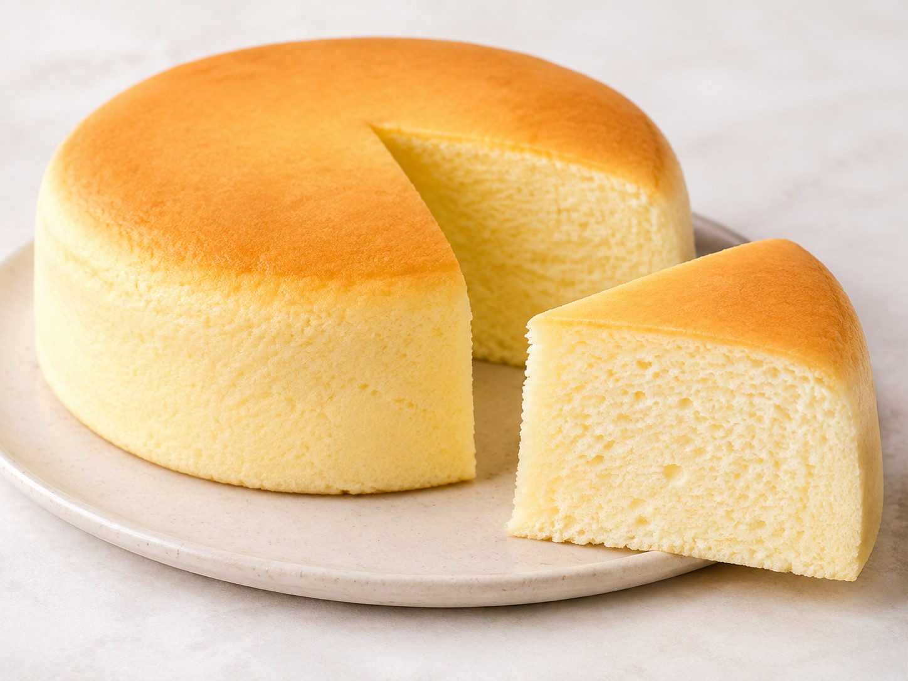

Десерты · 75 минут
Хлопковый японский чизкейк
Нежный и воздушный ПП хлопковый японский чизкейк на греческом йогурте и рисовой муке. Лёгкая пористая текстура, мягкая влажная серединка и аккуратная сладость без сахара — всё готовится на водяной бане при низкой температуре.
К ингредиентам
Ингредиенты · 6 порций
- Тесто
- Яйца куриные — 4 шт. (разделить на белки и желтки)
- Греческий йогурт без добавок — 350 г
- Рисовая мука — 120 г (примерно 1 мерная чашка; можно заменить нейтральной мукой)
- Подсластитель — по вкусу
- Ванилин — 1 щепотка
- Соль — 1 щепотка
- Лимонная кислота — 1 щепотка для взбивания белков
- Для водяной бани
- Тёплая вода — по необходимости, чтобы покрыть дно противня слоем 1–2 см
- Силиконовая форма — 1 шт.
Пищевая ценность
На 100 г: 125 ккал · Б 10 г · Ж 5 г · У 10 г
Шаг за шагом
Разделение яиц
Разделите 4 яйца на белки и желтки в две абсолютно чистые и сухие ёмкости. Следите, чтобы в белки не попало ни капли желтка — иначе они могут плохо взбиться.
Приготовление йогуртовой основы
К желткам добавьте 350 г греческого йогурта, ванилин, щепотку соли, подсластитель и 120 г рисовой муки. Тщательно пробейте массу погружным блендером до гладкой кремовой консистенции без комочков.
Взбивание белков
Добавьте к белкам щепотку лимонной кислоты и взбейте миксером до крепких устойчивых пиков. При переворачивании чаши белковая масса не должна падать или стекать.
Объединение масс
В три этапа аккуратно введите взбитые белки в йогуртово-желтковую основу. Каждый раз перемешивайте лопаткой движениями снизу вверх, чтобы сохранить максимум воздуха и получить хлопковую текстуру.
Выпекание на водяной бане
Перелейте тесто в силиконовую форму. Поставьте форму на противень и обязательно налейте в него тёплую воду слоем 1–2 см — это обеспечит мягкое равномерное выпекание.
Отправьте противень в предварительно разогретую до 140 °C духовку на 60 минут. Дверцу духовки во время выпекания не открывайте.
Остывание и подача
После окончания выпекания выключите духовку и оставьте чизкейк внутри на 10–15 минут с приоткрытой дверцей. Затем аккуратно достаньте форму, остудите десерт и нарежьте. После охлаждения текстура станет плотнее, но сохранит нежность и лёгкую влажность.